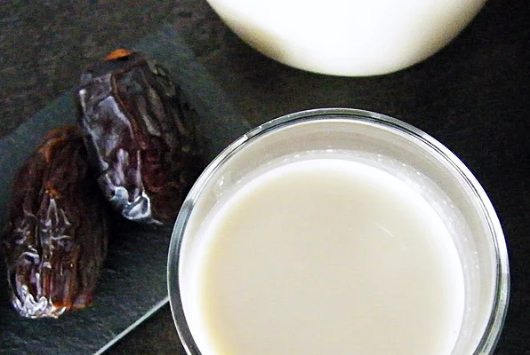

Almond Milk

Description
A recipe for homemade almond milk.
Ingredients
- 200g raw almonds
- 2-3 pitted dates
- 1 pinch of salt
- 1 liter of water
Steps
- Soak almonds in a boul over night. (In the fridge).
- Peel each almond individually.
- Put all the ingredients in a blender and... BLEND!
- In a large bowl or a pot, filter the blended stuff through a cheese cloth.
- Pour the milk in a glass bottle and put a cap on it.